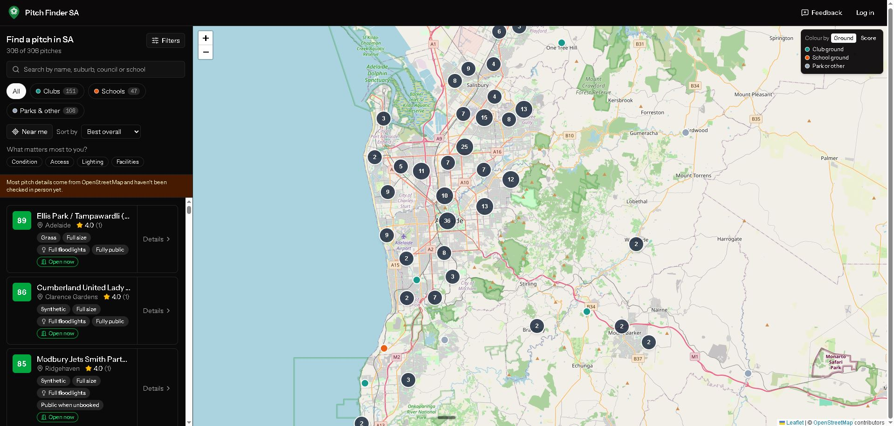

Side project · 2026
Pitch Finder SA
A map-based app for finding soccer pitches in South Australia. It shows surface, lighting, access, facilities and whether a pitch is likely to be free, so you can find somewhere to play without driving around.
Preview

The problem
When you want somewhere to play, you need to know a few things: what the surface is, whether there are lights, whether you can get in, and whether anyone is likely to be using it. Pitch Finder puts all of that on one map, for every pitch in the state.
What it does
Map of every pitch
Browse all 306 pitches on a Leaflet map, coloured by club, school or park ground, and search by name, suburb, council or school.
Likely to be free
Each pitch shows whether it's likely to be free, so you don't turn up to a full ground.
Ranked results
Pick what matters most to you (condition, access, lighting or facilities) and each pitch gets a weighted score out of 100.
Clubs and home grounds
Local clubs are linked to the grounds they play at.
How it's built
OpenStreetMap import
Every SA pitch is imported from OpenStreetMap through the Overpass API, so the data covers the whole state from day one.
- Overpass API
- Laravel
Photo pipeline
User photos are resized to WebP, stripped of GPS data and held for admin approval before they go public.
- WebP
- Moderation
Quality gate
One command runs Pint, PHPStan, vue-tsc and the test suite before every push, the same checks I rely on at work.
- Pint
- PHPStan
- vue-tsc
Stack
- Laravel 13
- Vue 3
- Inertia
- TypeScript
- Tailwind CSS
- Leaflet
- OpenStreetMap